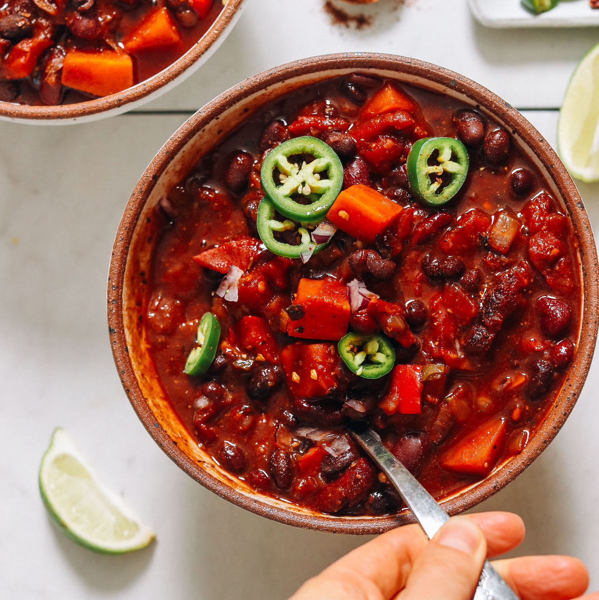

Chili

Description
When you're craving chili and need it on the table fast, this is the recipe for you! Say hello to our Instant Pot Chili (!) made with simple, wholesome ingredients and BIG flavor.
Smoky spices marry perfectly with kidney and black beans and sweet potatoes. It's hearty, warming, and incredibly comforting. Let us show you how it's done!
Ingredients
- 1/4 cup water, plus more as needed
- 1 medium white or yellow onion, diced
- 4 cloves garlic, minced
- 1 small jalapeno or serrano pepper, diced with seeds
- 1 large red bell pepper, diced
- 1/4 tsp each sea salt and black pepper
- 1 medium sweet potato, peeled and cubed
- 3 Tbsp chili powder blend
- 2 Tbsp ground cumin
- 1 Tbsp smoked paprika
- 2 15 ounce cans diced fire-roasted or plain tomatoes
- 2 Tbsp tomato paste
- 2 15 ounce cans kidney beans
- 1 15 ounce can black beans
- 1.5-2 cups veggie broth
- 1 Tbsp coconut sugar
FOR SERVING optional
- DIY Chili Cheese Fritos or Tortilla Chips
- Rice or Quinoa
- Fresh chopped cilantro
- Avocado
- Dairy-free sour cream or plain yogurt
- Hot Sauce
Steps
Notes
- We prefer this recipe with our homemade Panang Curry Paste for best flavor, but it does work with store-bought with a few adjustments. Store-bought curry paste is much saltier and tastes less fresh. To compensate, we recommend doubling the ginger, omitting the salt, and adding peanut butter and maple syrup to taste.
- Prep/cook time does not include cooking optional proteins.
- Nutrition information is a rough estimate calculated with homemade panang curry paste, the lesser amounts of avocado oil and salt, and without optional ingredients such as grains, tofu, and chicken.